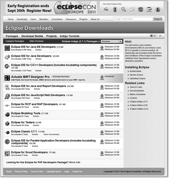

1.7 Eclipse im Speziellen
Die Entwicklungsumgebung Eclipse ist selbst in Java programmiert und benötigt zur Ausführung mindestens eine Java 5 JRE.[45](Natürlich kann Eclipse auch Klassendateien für Java 1.0 erzeugen, nur die IDE selbst benötigt mindestens Java 5.) Da allerdings Teile, wie die grafische Oberfläche, in C implementiert sind, ist Eclipse nicht 100 % pures Java, und beim Download unter http://www.eclipse.org/downloads/ ist auf das passende System zu achten.
Abbildung 1.9: http://www.eclipse.org/downloads
| Hinweis |
|
Erst Eclipse 3.7.1, Eclipse 3.8 und Eclipse 4.2 unterstützten die neuen Spracheigenschaften von Java 7, und der Editor verarbeitet Java-Quellcode korrekt. |
Eclipse gliedert sich in unterschiedliche Pakete, die bei NetBeans Bundles heißen:
- Eclipse IDE for Java Developers: Die kleinste Version zum Entwickeln von Java SE-Anwendungen
- Eclipse IDE for Java EE Developers: Diese Version enthält einen XML-Editor und Erweiterungen für die Entwicklung von Webanwendungen und Java EE-Applikationen. Die eingebundenen Unterprojekte heißen Web Standard Tools (WST) und J2EE Standard Tools Project (JST).
- Eclipse Classic 3.7: Wie die Eclipse IDE for Java Developers, nur mit Quellen und Dokumentation.
- Eclipse IDE for C/C++ Developers: Eclipse als Entwicklungsumgebung für C(++)-Programmierer. Das kleinste Paket, da es ausschließlich für die Programmiersprache C(++) und nicht für Java ist.
Auf der Download-Seite sind neben der aktuellen Version auch die letzten Releases zu finden. Die Hauptversionen heißen Maintenance Packages. Neben ihnen gibt es Stable Builds und für Mutige die Integration Builds und Nightly Builds, die einen Blick auf kommende Versionen werfen. Standardmäßig sind Beschriftungen der Entwicklungsumgebung in englischer Sprache, doch gibt es mit den Eclipse Language Packs Übersetzungen etwa für Deutsch, Spanisch, Italienisch, Japanisch, Chinesisch und weitere Sprachen. Für die Unterprojekte (WST, JST) gibt es individuelle Updates.
| Hinweis |
|
Im Buch setzen wir für die Webentwicklung die Eclipse IDE for Java EE Developers voraus. Für alle anderen Kapitel ist das Paket Eclipse IDE for Java Developers ausreichend. |
1.7.1 Eclipse starten
Eine Installation von Eclipse im typischen Sinne mit einem Installer ist nicht erforderlich, dennoch beschreiben die folgenden Schritte die Benutzung unter Windows.
Nach dem Download und Auspacken des Zip-Archivs gibt es einen Ordner eclipse mit der ausführbaren Datei eclipse.exe und Unterverzeichnisse für nachinstallierbare Plugins. Das Eclipse-Verzeichnis lässt sich frei wählen.
Abbildung 1.10: Eclipse-Ordner
Nach dem Start von eclipse.exe folgen ein Willkommensbildschirm und ein Dialog wie dieser:
Abbildung 1.11: Workspace auswählen
Mit einer Eclipse-Instanz ist ein Workspace verbunden. Das ist ein Verzeichnis, in dem Eclipse-Konfigurationsdaten, Dateien zur Änderungsverfolgung und standardmäßig Quellcode-Dateien sowie Binärdateien gespeichert sind. Der Workspace kann später gewechselt werden, doch ist nur ein Workspace zur gleichen Zeit aktiv; er muss zu Beginn der Eclipse-Sitzung festgelegt werden. Wir belassen es bei dem Home-Verzeichnis des Benutzers und können den Haken aktivieren, um beim nächsten Start nicht noch einmal gefragt zu werden.
Es folgt das Hauptfenster von Eclipse mit einem Hilfsangebot inklusive Tutorials für Einsteiger und mit Erklärungen, was in der Version neu ist, für Fortgeschrittene. Ein Klick auf das × rechts vom abgerundeten Reiter Welcome schließt die Ansicht.
Abbildung 1.12: Eclipse-Startbildschirm
1.7.2 Das erste Projekt anlegen
Nach dem Start von Eclipse muss ein Projekt angelegt (oder eingebunden) werden – ohne dieses lässt sich kein Java-Programm ausführen. Im Menü ist dazu File New Project... auszuwählen. Alternativ führt auch die erste Schaltfläche in der Symbolleiste zu diesem Dialog. Es öffnet sich ein Wizard, mit dessen Hilfe wir ein New Project erzeugen können.
Abbildung 1.13: Dialog für neues Projekt
Der Klick auf Next > blendet einen neuen Dialog für weitere Einstellungen ein.
Abbildung 1.14: Dialog für neues Java-Projekt
Unter Project name geben wir einen Namen für unser Projekt ein: »Insel«. Mit dem Projekt ist ein Pfad verbunden, in dem die Quellcodes und übersetzten Klassen gespeichert sind. Standardmäßig speichert Eclipse die Projekte im Workspace ab, wir können aber einen anderen Ordner wählen; belassen wir es hier bei einem Unterverzeichnis im Workspace. Im Rahmen JRE steht bei Use default JRE nicht unbedingt das gewünschte JDK (etwa für Java 7). Das lässt sich global für alle folgenden Projekte einstellen oder lokal nur für dieses neue Projekt. Wir wollen global die Einstellung ändern und gehen daher auf Configure JREs..., was uns zu einem zentralen Konfigurationsdialog führt.
Abbildung 1.15: JRE-Einstellungen nach der Installation
Dort nehmen wir zwei Einstellungen vor: Als Erstes setzen wir die passende Laufzeitumgebung, und dann setzen wir den Compiler auf die gewünschte Version. Sind wir im linken Baum unter Installed JREs, suchen wir mit Search... die Platte nach JVMs ab. Die Liste kann je nach Installation kürzer sein und andere Einträge enthalten. Dann setzen wir ein Häkchen beim gewünschten JDK, in unserem Fall bei JDK1.7.0 (siehe Abbildung 1.16).
Die zweite Einstellung betrifft im Baum den Eintrag Compiler (siehe Abbildung 1.17). Dort wählen wir unter Compiler compliance level das Gewünschte, also etwa die Version 1.7. Nach der Dialogbestätigung mit OK folgt ein kleiner Hinweis, den wir mit Yes bestätigen.
Abbildung 1.16: JRE-Einstellungen nach dem Hinzufügen einer neuen Laufzeitumgebung
Abbildung 1.17: Java 7 Compiler einstellen
Das bringt uns zum Dialog New Java Project zurück. Die Schaltfläche Finish schließt das Anlegen ab. Da es sich um ein Java-Projekt handelt, möchte Eclipse auch in eine Java-Ansicht gehen, und den folgenden Dialog sollten wir mit Yes bestätigen.
Abbildung 1.18: Perspektivenwechsel für die Java-Umgebung
Jetzt arbeiten wir mit einem Teil von Eclipse, der sich Workbench nennt. Welche Ansichten Eclipse platziert, bestimmt die Perspektive (engl. perspective). Zu einer Perspektive gehören Ansichten (engl. views) und Editoren. Im Menüpunkt Window Open Perspective lässt sich diese Perspektive ändern, doch um in Java zu entwickeln, ist die Java-Perspektive im Allgemeinen die beste. Das ist die, die Eclipse auch automatisch gewählt hat, nachdem wir das Java-Projekt angelegt haben.
Jede Ansicht lässt sich per Drag & Drop beliebig umsetzen. Die Ansicht Outline oder Task List auf der rechten Seite lässt sich auf diese Weise einfach an eine andere Stelle schieben – unter dem Package Explorer ist sie meistens gut aufgehoben.
Abbildung 1.19: Eclipse mit dem »Insel«-Java-Projekt und verschobenen Views
1.7.3 Eine Klasse hinzufügen
Dem Projekt können nun Dateien – das heißt Klassen, Java-Archive, Grafiken oder andere Inhalte – hinzugefügt werden. Auch lassen sich in das Verzeichnis nachträglich Dateien einfügen, die Eclipse dann direkt anzeigt. Doch beginnen wir mit dem Hinzufügen einer Klasse aus Eclipse. Dazu aktivieren wir über File New Class ein neues Fenster. Das Fenster öffnet sich ebenfalls nach der Aktivierung der Schaltfläche mit dem grünen C in der Symbolleiste bzw. im Kontextmenü unter src.
Notwendig ist der Name der Klasse; hier Squared. Wir wollen auch einen Schalter für public static void main(String[] args) setzen, damit wir gleich eine Einstiegsmethode haben, in der sich unser erster Quellcode platzieren lässt.
Abbildung 1.20: Neue Klasse in Eclipse anlegen
Nach dem Finish fügt Eclipse diese Klasse unserem Projektbaum hinzu, erstellt also eine Java-Datei im Dateisystem und öffnet sie gleichzeitig im Editor. In die main()-Methode schreiben wir zum Testen:
int n = 2;
System.out.println( "Quadrat: " + n * n );
Eclipse besitzt keine Schaltfläche zum Übersetzen. Zum einen lässt Eclipse automatisch einen Compiler im Hintergrund laufen – sonst könnten wir die Fehlermeldungen zur Tippzeit nicht sehen –, und zum anderen nimmt Eclipse das Speichern zum Anlass, einen Übersetzungsvorgang zu starten.
1.7.4 Übersetzen und ausführen
Damit Eclipse eine bestimmte Klasse mit einer main()-Methode ausführt, können wir mehrere Wege gehen. Wird zum ersten Mal Programmcode
einer Klasse ausgeführt, können wir rechts neben dem grünen Kreis mit dem Play-Symbol
auf den Pfeil klicken und im Popup-Menü Run As und anschließend Java Application auswählen. Ein anderer Weg:  + + , dann .
+ + , dann .
Abbildung 1.21: Java-Applikationen ausführen
Anschließend startet die JVM die Applikation. Assoziiert Eclipse einmal mit einem
Start eine Klasse, reicht in Zukunft ein Aufruf mit  + . Unten in der Ansicht mit der Aufschrift Console ist die Ausgabe zu sehen.
+ . Unten in der Ansicht mit der Aufschrift Console ist die Ausgabe zu sehen.
Abbildung 1.22: Ausgaben der Java-Programme in der Console-View
1.7.5 JDK statt JRE *
Beim ersten Start sucht Eclipse eine installierte Java-Version. Das ist im Allgemeinen das JRE, das ohne Dokumentation daherkommt, was beim Programmieren sehr unpraktisch ist. Erst das Java JDK enthält die Dokumentation, die Eclipse aus dem Quellcode extrahiert. Im ersten Schritt hatten wir schon das JDK eingebunden. Wer das übersprungen hat, der kann es nachholen: Es beginnt mit dem globalen Konfigurationsdialog unter Window Preferences... Hier sollte jeder Entwickler einmal die Konfigurationsmöglichkeiten durchgehen. Für unser JRE/JDK-Problem lässt sich links im Baum Java ausfalten und anschließend im Zweig Installed JREs nach einem JDK suchen. Die Schaltfläche Search... aktiviert einen Dateiauswahldialog, der zum Beispiel auf C:\Program Files\Java steht – nicht auf dem Verzeichnis mit der Installation selbst! Nach der Suche befindet sich in der Liste ein JDK, wo wir das Häkchen setzen. Schließlich bestätigen wir den Dialog mit OK.
1.7.6 Start eines Programms ohne Speicheraufforderung
In der Standardeinstellung fragt Eclipse vor der Übersetzung und Ausführung mit einem Dialog nach, ob noch nicht gesicherte Dateien gespeichert werden sollen.
Abbildung 1.23: Vor dem Ausführen muss die Datei gespeichert werden.
Dort kann das Häkchen gesetzt werden, das die Quellen immer speichert.
In der Regel soll die Entwicklungsumgebung selbst die veränderten Dateien vor dem Übersetzen speichern. Es gibt noch einen anderen Weg, um dies einzustellen. Dazu muss eine Einstellung in der Konfiguration vorgenommen werden: Unter Window Preferences öffnen wir wieder das Konfigurationsfenster und wählen den Zweig Run/Debug und dort den Unterzweig Launching. Rechts unter Save required dirty editors before launching aktivieren wir dann den Schalter Always.
Abbildung 1.24: Editoren immer vor dem Ausführen speichern
1.7.7 Projekt einfügen, Workspace für die Programme wechseln
Alle Beispielprogramme im Buch gibt es auf der DVD oder im Netz unter http://www.tutego.de/javabuch. Die Beispielprogramme eines Kapitels befinden sich in einem eigenen Verzeichnis, sodass etwa für Kapitel 4, »Der Umgang mit Zeichenketten«, der Name 1_04_Chars_Strings vergeben ist. Um das Ausprobieren noch einfacher zu machen, ist jedes Beispiel-Verzeichnis ein eigenständiges Eclipse-Projekt. Um zum aktuellen Workspace die Beispiele aus Kapitel 4 hinzuzunehmen, wählen wir im Menü File Import..., dann im Dialog der Sektion General die Optionen Existing Projects into Workspace und anschließend Next. Bei Select root directory wählen wir unter Browse das Verzeichnis 1_04_Chars_Strings des Dateisystems. Zurück im Import-Dialog, erscheint nun unter Projects der Projektname 04_Chars_Strings. Nach einem Finish ist das Projekt mit den Beispielen für Zeichenketten Teil des eigenen Workspace.
Das Projekt wird nicht physikalisch in den Workspace kopiert (dazu muss der Schalter Copy projects into workspace gewählt sein), sondern nur referenziert.

Abbildung 1.25: Importieren von Projekten in den Eclipse-Workspace
Ein nicht mehr benötigtes Projekt im Workspace schließen wir mit der Operation Close Project im Kontextmenü des Projekts. Ebenfalls im Kontextmenü unter Delete (oder über auf der Tastatur) lässt sich ein Projekt löschen. Beim Löschen folgt noch eine Sicherheitsabfrage.
Da alle Beispielprogramme des Buchs auch als Eclipse-Workspace mit je einem Eclipse-Projekt pro Kapitel organisiert sind, lassen sich auch alle Buchbeispiele gleichzeitig einbinden. Dazu ist File Switch Workspace... zu wählen und im folgenden Dialog der Pfad zu den Programmen anzulegen.
Abbildung 1.26: Zu einem neuen Workspace wechseln
Eclipse beendet sich jetzt und startet anschließend mit dem neuen Workspace.
1.7.8 Plugins für Eclipse
Zusätzliche Anwendungen, die in Eclipse integriert werden können, werden Plugins genannt. Ein Plugin besteht aus einer Sammlung von Dateien in einem Verzeichnis oder Java-Archiv. Für die Installation gibt es mehrere Möglichkeiten: Eine davon besteht darin, den Update-Manager zu bemühen, der automatisch im Internet das Plugin lädt; die andere besteht darin, ein Archiv zu laden, das in das plugin-Verzeichnis von Eclipse entpackt wird. Beim nächsten Start erkennt Eclipse automatisch das Plugin und integriert es (ein Neustart von Eclipse bei hinzugenommenen Plugins war bislang immer nötig).
Hunderte von Plugins sind verfügbar, einige auserwählte stellt http://www.tutego.de/java/eclipse/plugin/eclipse-plugins.html zusammen.
Ihr Kommentar
Wie hat Ihnen das <openbook> gefallen? Wir freuen uns immer über Ihre freundlichen und kritischen Rückmeldungen.
 Jetzt bestellen
Jetzt bestellen


{kind=link}
{kind=link}
{kind=link}
{kind=link}
{kind=link}
{kind=link}
{kind=link}
{kind=link}
{kind=link}
{kind=link}
{kind=link}
{kind=link}
{kind=link}
{kind=link}
{kind=link}
{kind=link}
{kind=link}